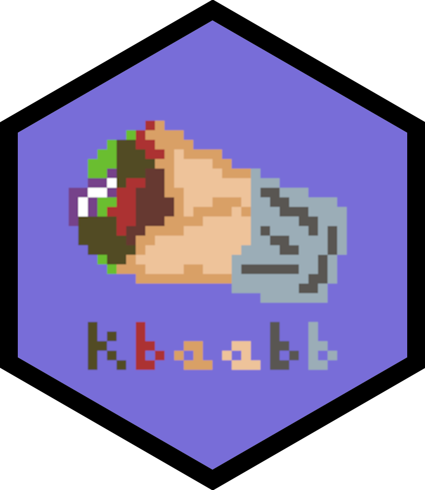
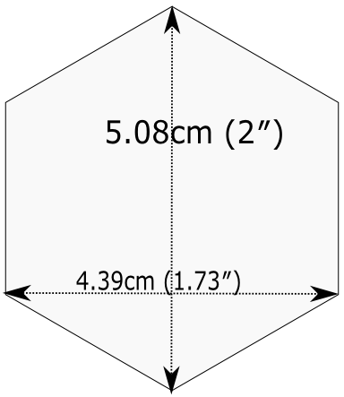

R Packages: vignettes + dissemination
Grayson White
Stat 241
Week 12 | Fall 2026
Week’s Goals
Mon Lecture
Rpackage documentation and metadata
Wed Lecture
Rpackage testingRpackage dissemination:- Vignettes, and
- package websites
Recap OuR Package: pdxHoles
- Share the Portland reported potholes dataset, along with documentation.
- Includes,
plot_holes(), a function that plots the location of the potholes along with their status. - Working copy can be found at https://github.com/Reed-Data-Science/pdxHoles
- Other questions so far?
Testing
Testing – Informally
Return to our first function:
Testing – Informally
Ran so many tests!
Testing – Informally
Ran so many tests!
How should we formally test our package functions?
Testing our Package Functions
Standard workflow in package development:
- Write/revise the function in an
.Rscript.- (Also write documentation using
roxygen2)
- (Also write documentation using
- Load the function with
devtools::load_all() - Experiment with the function, giving it different inputs.
- Repeat.
Step 3 likely involves similar informal testing as we were doing for our functions outside an
Rpackage.Good to transition to automated testing (also called unit testing) using
testthat!
Why Automated Testing?
- Fewer bugs.
- Describe the behavior of your function in both the code and the test. Check against each other.
- When adding a new feature to a function, you reduce the chances it breaks the existing features.
- Can help motivate more refactoring of your code.
- Functions that are easier to test are usually easier to understand.
testthat
Creates the
tests/testthatfolder.In particular, we now have a
testthat.Rfile that will initiate all your tests every time you rundevtools::check().
Test File Structure
- For every
insert_function_name.Rfunction in theRfolder that you want tests for, create antest-insert_function_name.Rfor storing your tests.- You can automate this process with:
- Each test file holds one or more
test_that()tests for a particular function in your package.
- Each test:
- Describes what it is testing.
- Has one or more expectations.
Test File Structure
Test passed with 1 success 🌈.Expectations
Expectation: Expected result of a computation
Start with
expect_---()Two main arguments:
- 1st: Actual result
- 2nd: What you expect
- They automate the visual checking of results in the console.
Expectations
Expectation: Expected result of a computation
Key Questions:
- Does it have the correct value(s) or dimensions?
- Does it have the correct class?
- Does it produce an error when it should?
Let’s explore some of the expect_*() functions in testthat!
Testing Equality
Error:
! Expected `2 * 2` to equal `4 + 1e-07`.
Differences:
1/1 mismatches
[1] 4 - 4 == -1e-07Error:
! Expected `2 * 2` to be identical to `4 + 1e-07`.
Differences:
1/1 mismatches
[1] 4 - 4 == -1e-07Error:
! Expected `2 * 2` to be identical to 4L.
Differences:
Objects equal but not identicalTesting Class
Check the class of your output:
── Failure: check class ────────────────────────────────────────────────────────
Expected `plot_holes()` to inherit from "data.frame".
Actual class: "ggplot2::ggplot"/"ggplot"/"ggplot2::gg"/"S7_object"/"gg".Error:
! Test failed with 1 failure and 0 successes.Testing Errors
- Remember to use defensive coding in your function and then check them with your tests.
Need to put better checks in
plot_holes().There are similar functions for warnings and messages:
expect_warning(),expect_message()
Testing Guidelines
- Focus on outputs and behaviors of your functions.
- The defensive code in your functions focuses on the inputs.
- Test each behavior in one test.
- If you find a bug, write a test!
Running Tests – Three Options
Option 1: Refine a specific test
Running Tests – Three Options
Option 2: Run all tests on a function
Option 3: Run all tests on all functions
- Will error out if any of the tests don’t pass.
Vignettes
“The vignette format is perfect for showing a workflow that solves that particular problem, start to finish. Vignettes afford you different opportunities than help topics: you have much more control over the integration of code and prose and it’s a better setting for showing how multiple functions work together.” – Hadley Wickham and Jenny Bryan
Vignettes Set-up
To get started, run:
Which
- Creates the
vignettesfolder. - Updates the
DESCRIPTIONwith new dependencies. - Provides a template in the file
pdxHoles.Rmd. - Updates your
.gitignore.
Vignettes Workflow
- Run
devtools::load_all()to make sure you have access to the data and functions in the package. - Edit the narrative and code chunks.
- To render the vignette using a temporarily installed, development version of your package, run
- Inspect the output file.
- Repeat!
Vignettes Workflow
Eventually,
- To make the current state available locally with an install of the package:
- To get vignettes when installing a package from GitHub:
Suggestions for Writing a Good Vignette
- Think of your vignette as an instructive tutorial.
- First, identify (for yourself) what you want the vignette to accomplish.
- Be careful with the curse of knowledge.
- Break up the code with concise but clear narrative that motivates the next block of code.
- Hyper-link to other relevant packages and functions.
Important Note:
- Any package used in a vignette must be listed in the
DESCRIPTIONfile under eitherImportsorSuggests.
Website for Your Package with pkgdown
Create the Site
Run:
- Creates
pkgdown.yml: The configuration file for your package. - Adds the correct files to the
.Rbuildignore. - Creates the
docsfolder which will store all the pages for the website.
Build the Site
To create the site, run:
- The site is only as good as the documentation included in your package.
- But, if you have created useful help files, an informative Readme, a complete
DESCRIPTIONfile, and a vignette, then your defaultpkgdownsite will be pretty great!
- But, if you have created useful help files, an informative Readme, a complete
Deploy the Site
To set it up so that your site can be published to a GitHub pages, run (just once):
- Creates a branch in GitHub that will store the files for your website.
- Turns on GitHub Pages for your repo
- Let’s GitHub know where to find the files for the website.
- Adds the URL for the site to the appropriate files.
Deploy the Site
Big Wrinkle: Can’t deploy on our private GitHub Organization.
Have to deploy through a repo tied to your individual account
Requires changing a GitHub Action setting!
Not a requirement of Project 2!
Hex Sticker
A strong tradition in the
Rcommunity.Fun way to remember and advertise a package.

Hex Sticker
A strong tradition in the
Rcommunity.Fun way to remember and advertise a package.
Hex Sticker
A strong tradition in the
Rcommunity.Fun way to remember and advertise a package.
- But there are rules…

Next week
The final week of classes… 😭
Some project work time (Monday)
Building your data science profile (Wednesday)